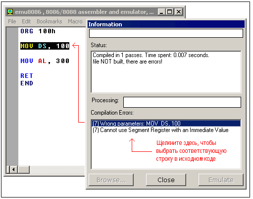

TEXT SCRAMBLING in TRIAL VERSION OUTPUT! In evaluation mode, Help+Manual will scramble individual characters in random words in your published output files. This is a limitation of the free trial version. This help system was created with an evaluation copy of Help+Manual.
Компиляция кода Ассемблера
Перевод: Поляков А.В. http://www.avprog.narod.ru
Напечатайте ваш код внутри текстовой области и щелкните кнопку [Compile]. Вас спросят, где сохранить откомпилированный файл. После завершения компиляции вы можете щелкнуть кнопку [Emulate] для загрузки откомпилированного файла в эмулятор.
Директивы, определяющие тип исполнимого файла:
#MAKE_COM# Вы можете вставить эти директивы в исходный код для определения нужного вам типа исполнимого файла. В том случае, если компилятор не найдет ни одной из этих директив, он спросит у вас тип файла перед его созданием.
Описание типов исполнимых файлов:
•#MAKE_COM# - самый старый и самый простой формат исполнимого файла. Такие файлы загружаются с префиксом 100h (256 байтов). Выберите СОМ Template из меню New, если вы планируете компилировать COM-файл. Директива компилятора ORG 100h должна быть добавлена перед кодом. Выполнение всегда начинается с первого байта файла. Поддерживается командной строкой DOS и Windows.
•#MAKE_EXE# - более "продвинутый" формат исполнимого файла. Не ограничены размер и количество сегментов. Сегмент стека должен быть определен в программе. Вы можете выбрать EXE Template из меню New для создания простой ЕХЕ-программы с определенными сегментмами Данных, Стека и Кода. Точка входа (где начинается выполнение) определяется программистом. Поддерживается командной строкой DOS и Windows.
•#MAKE_BIN# - простой исполнимый файл. Вы можете определить значения всех регистров, сегмент и смещение для области памяти, куда этот файл будет загружен. Если загрузить файл "MY.BIN" в эмулятор, он будет виден для файла "MY.BINF" и загрузится файл "MY.BIN" в местоположение, определенное в файле "MY.BINF". Регистры также установятся с учетом информации из этого файла (откройте этот файл в редакторе для изменения или изучения). В том случае, если эмулятор не найдет файл "MY.BINF", будет использоваться текущие значения регистров и файл "MY.BIN" загрузится в текущий CS:IP. Выполнение начинается со значения в CS:IP. Этот тип файла уникален для Emu8086.
Файл ".BINF создается автоматически компилятором, если он находит директиву #MAKE_BIN#. ПРЕДУПРЕЖДЕНИЕ! если файл ".binf" существует, то он будет перезаписан!
Значения должны быть шестнадцатиричными!
Если эти значения не определены, то они устанавливаются по умолчанию: LOAD_SEGMENT = 0100 LOAD_OFFSET = 0000 CS = ES = SS = DS = 0100 IP = 0000
Если LOAD_SEGMENT и LOAD_OFFSET не определены, то используются значения CS и IP, и наоборот.
Если значение Load to offset не равно нулю (0000), то ORG ????h должна быть добавлена в файл .BIN, где ????h - это смещение для загрузки. Это должно быть сделано для того, чтобы компилятор мог вычислить правильные адреса.
•#MAKE_BOOT# - эта директива копирует первую дорожку дискеты (загрузочный сектор). Вы можете записать загрузочный сектор виртуального дисковода (FLOPPY_0) через меню эмулятора: [Virtual Drive] -> [Write 512 bytes at 7C00 to Boot Sector] Сначала вы должны откомпилировать ".boot"-файл, а затем загрузить его в эмулятор (см. "micro-os_loader.asm" и "micro-os_kernel.asm" в разделе "Samples").
Затем выберите в меню [Virtual Drive] -> [Boot from Floppy], чтобы загрузить эмулятор с виртуального дисковода.
Затем, если вам любопытно, вы можете записать виртуальную дискету на реальную дискету и загрузить с нее ваш компьютер. Я рекомендую использовать "RawWrite for Windows" с: http://uranus.it.swin.edu.au/~jn/linux/rawwrite.htm (учтите, что "micro-os_loader.asm" не использует MS-DOS-совместимый загрузочный сектор, так что лучше использовать чистую дискету, хотя она должна быть отформатирована IBM (MS-DOS)). Директива компилятора ORG 7C00h должна быть добавлена перед кодом, если компьютер начинает загружаться с первой дорожки дискеты в адрес 0000:7C00. Размер .BOOT-файла должен быть менее 512 байтов (ограничен размером сектора дискеты). Выполнение всегда начинается с первого байта файла. Этот тип файла уникален для эмулятора Emu8086.
Обработка ошибок
Компилятор выводит отчет об ошибках в отдельном окне:

MOV DS, 100 - это недопустимая команда, потому что в сегментный регистр нельзя устанавливать непосредственное значение - должны использоваться регистры общего назначения: MOV AX, 100 MOV DS, AX
MOV AL, 300 - это недопустимая команда, т.к. регистр AL имеет только 8 битов, и его максимальное значение 255 (или 11111111b), а минимальное -128.
Компилятор делает несколько проходов перед генерацией правильного машинного кода. Если он находит ошибку и не выполняет требуемое количество проходов, он может выдать неправильное сообщение об ошибке. Например: #make_COM# Список генерируемых ошибок: (7) Condition Jump out of range (Условие перехода за пределами диапазона)!: LOOP m1 (9) Wrong parameters (Неправильнве параметры): MOV AL, 0FFFFh (9) Operands do not match (Операнды не соответствуют): Second operand is over 8 bits (Второй операнд более 8 битов)!
Первое сообщение (7) - неправильное. Компилятор не закончил вычисление смещений для меток, поэтому он думает, что смещение метки m1 - это 0000. Этот адрес лежит за пределами диапазона, т.к. мы начинаем со смещения 100h.
Внесите исправления в эту строку: MOV AL, 0FFFFh (AL не может содержать значение 0FFFFh). Это устранит обе ошибки! Например:
#make_COM#
При сохранении компилируемого файла, компилятор также сохраняет 2 других файла, которые используются эмулятором для отображения фактического исходного кода при его исполнении и выборе соответствующей строки. •*.~asm - этот файл содержит оригинальный исходный код, который был использован для создания исполнимого файла.
•*.debug - этот файл содержит информацию, которая позволяет эмулятору выбирать строки оригинального исходного кода во время выполнения машинного кода.
•*.symbol - Таблица символов. Она содержит информацию, которая позволяет отображать окно "Variables" (Переменные). Это текстовый файл, так что вы можете посмотреть его из текстового редактора.
•*.binf - этот файл содержит информацию, которая используется эмулятором для загрузки BIN-файла в указанное местоположение, и установки значений регистров предшествующих выполнению (создается только в том случае, если исполнимый файл - это BIN-файл).
|